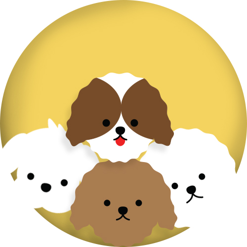

작은 체구와 새하얀 털을 가진 귀엽고 사랑스러운 말티즈. 말티즈는 "개들의 귀족"이라고 불릴 정도로 순수 관상용으로 길러진 견종이랍니다. 그러다보니 사람을 무척 좋아하며, 매우 활발하고 활기차게 뛰어 노는 것을 좋아해요. 또한 말티즈는 소형견 중에서도 작은편에 속하다보니 작은 공간에서도 잘 적응하며, 비교적 폐쇄적인 공간을 선호하는 성향을 가지고 있어 한국식 주거 생활에도 잘 적응 할 수 있답니다. 애교만점. 사교성 만점에 한국식 주거생활에도 적합하다보니 국내의 대부분의 조사에서도 선호견종 1위를 차지며, 한국의 많은 반려인들과 함께 지내고 있답니다. 장점이 많은 말티즈는 초보 반려인이 함께 하기 좋아요 하지만 주의해야할 점도 있답니다. 말티즈는 다른 강아지들과 비교했을때 비교적 털빠짐이 적지만 장모에 단일모기 때문에 털이 얇아 자주 엉키기 쉽기 때문에 세심한 관리가 필수입니다. 또 자기 주장이 강하고 고집이 있는 편이기 때문에 자신이 가지게 되는 목적이 달성 되어야 직성이 풀리는 성향이 있어요. '말티즈는 참지 않긔'라는 유명한 수식어가 생겼을정도로 말티즈는 관상용으로 여러 세대를 거치며 사랑을 듬뿍 받았기 때문에 애정이 깊은 사람에게는 더 질투와 응석이 심해지며 버릇이 나빠질 수 있기 때문에 잘 훈련해 주시는게 좋답니다.
푸들은 커다란 스텐다드 푸들부터 작은 토이 푸들까지 크기가 다양해요. 원래 사냥개로 활동하던 품종인 푸들은 긴 다리를 가지고 있고, 흰색과 검정, 회색, 갈색, 살구색, 크림색 등 다양한 색상을 가지고 있어요. 푸들의 곱슬거리는 털은 털빠짐이 적어 가정에서 키우기 좋아요. 하지만 주의하세요! 긴 다리를 가진 푸들은 점프력이 뛰어나 높은 곳에 있는 음식을 먹을 지도 몰라요. 그리고 푸들은 2019년 기준 세계 천재견 순위 2위를 차지할 정도로 강아지들 사이의 지능견이랍니다. 활발하고 지능적인 성격이 특징인만큼, 육체적 활동과 지적 활동을 모두 충족시켜 주어야 해요. 산책을 자주 시켜주시고 머리 쓰는 활동을 자주 해주세요. 푸들은 보호자를 잘 따르는 성격을 가지고 있어서 보호자의 감정도 많이 공유하는 편이랍니다. 얼마나 사랑스러운 성격인지요. 하지만 보호자를 잘 따르는 만큼 분리불안이 걸리기도 쉽고, 사회화를 놓칠 경우 방어적인 성격이 공격성으로 나타날 수 있기 때문에 많은 관심과 훈련이 필요해요.
작은 체구와 새하얀 털을 가진 귀엽고 사랑스러운 말티즈. 말티즈는 "개들의 귀족"이라고 불릴 정도로 순수 관상용으로 길러진 견종이랍니다. 그러다보니 사람을 무척 좋아하며, 매우 활발하고 활기차게 뛰어 노는 것을 좋아해요. 또한 말티즈는 소형견 중에서도 작은편에 속하다보니 작은 공간에서도 잘 적응하며, 비교적 폐쇄적인 공간을 선호하는 성향을 가지고 있어 한국식 주거 생활에도 잘 적응 할 수 있답니다. 애교만점. 사교성 만점에 한국식 주거생활에도 적합하다보니 국내의 대부분의 조사에서도 선호견종 1위를 차지며, 한국의 많은 반려인들과 함께 지내고 있답니다. 장점이 많은 말티즈는 초보 반려인이 함께 하기 좋아요 하지만 주의해야할 점도 있답니다. 말티즈는 다른 강아지들과 비교했을때 비교적 털빠짐이 적지만 장모에 단일모기 때문에 털이 얇아 자주 엉키기 쉽기 때문에 세심한 관리가 필수입니다. 또 자기 주장이 강하고 고집이 있는 편이기 때문에 자신이 가지게 되는 목적이 달성 되어야 직성이 풀리는 성향이 있어요. '말티즈는 참지 않긔'라는 유명한 수식어가 생겼을정도로 말티즈는 관상용으로 여러 세대를 거치며 사랑을 듬뿍 받았기 때문에 애정이 깊은 사람에게는 더 질투와 응석이 심해지며 버릇이 나빠질 수 있기 때문에 잘 훈련해 주시는게 좋답니다.
푸들은 커다란 스텐다드 푸들부터 작은 토이 푸들까지 크기가 다양해요. 원래 사냥개로 활동하던 품종인 푸들은 긴 다리를 가지고 있고, 흰색과 검정, 회색, 갈색, 살구색, 크림색 등 다양한 색상을 가지고 있어요. 푸들의 곱슬거리는 털은 털빠짐이 적어 가정에서 키우기 좋아요. 하지만 주의하세요! 긴 다리를 가진 푸들은 점프력이 뛰어나 높은 곳에 있는 음식을 먹을 지도 몰라요. 그리고 푸들은 2019년 기준 세계 천재견 순위 2위를 차지할 정도로 강아지들 사이의 지능견이랍니다. 활발하고 지능적인 성격이 특징인만큼, 육체적 활동과 지적 활동을 모두 충족시켜 주어야 해요. 산책을 자주 시켜주시고 머리 쓰는 활동을 자주 해주세요. 푸들은 보호자를 잘 따르는 성격을 가지고 있어서 보호자의 감정도 많이 공유하는 편이랍니다. 얼마나 사랑스러운 성격인지요. 하지만 보호자를 잘 따르는 만큼 분리불안이 걸리기도 쉽고, 사회화를 놓칠 경우 방어적인 성격이 공격성으로 나타날 수 있기 때문에 많은 관심과 훈련이 필요해요.
간식으로 강아지의 관심을 끈다.
훈련 진행간식을 강아지 머리 위로 적당히 들어서 강아지가 자연스럽게 위를 쳐다보게 한다. 이때 너무 높게 들면 강아지가 두 발을 들고 스며, 너무 낮게 들면 강아지가 고개를 숙여 버린다. 적당한 각도로 간식을 들면 강아지가 자연스럽게 앉는 동작을 취한다. 이 때 아무 말도 할 필요가 없다. 강아지는 ‘앉아’라는 단어를 아직 모른다. 강아지가 앉은 후에는 칭찬과 간식으로 보상해준다.
강아지에게 앉아 자세를 시킨다.
훈련 시작1. 간식을 보여줘 강아지의 관심을 끈다.
2. 간식을 손안에 숨긴 후 강아지의 코 근처에 갖다 댄다. 간식을 갖다 대면 강아지가 킁킁 냄새를 맡기 시작할 것이다.
3. 냄새를 맡아도 간식을 주지 않으면, 강아지는 어느새 손을 쓰게 된다. 이때 중형견/대형견일 경우 살짝 아플 수도 있다.
4. 강아지가 손을 치는 순간 손바닥을 펼쳐 강아지에게 간식을 주며 보상한다.
5. 이를 반복하다보면 강아지가 간식을 숨긴 손을 보면, 손을 바로 갖다 댈 것이다. 이 때 ‘손’이라는 단어를 말하여 강아지에게 해당 단어를 가르친다.
강아지에게 앉아 자세를 시킨다.
훈련 시작1. 손바닥을 펼치며 제자리에서 강아지에게 ‘기다려’라고 말한다.
2. 강아지가 바로 일어서지 않고 기다리면 강아지에게 간식으로 보상 해준다.
3. 그 다음에는 기다려라고 말한 후에 한 발자국 물러선다.
4. 강아지가 따라오지 않고 기다리면 강아지에게 간식을 줘서 보상해준다.
5. 위를 반복하되, 기다려라고 말한 후에 조금 더 멀리 물러나본다.
6. 강아지가 기다리면 얼른 돌아와 간식을 주어 보상해준다.
- 귀여움을 표출하기 위한 행동 일 수 있어요 갸우뚱 하는 모습을 보고 우리가 자신의 행동에 웃음을 보이고 긍정적인 반응을 보이는 경우가 많기 때문에 습득한 행동의 표현이 될 수 있어요
- 연구에 따르면 강아지들은 사람들의 행복, 슬픔, 기쁨 그리고 화를 내는 것을 직관적으로 알 수 있다고 합니다. 내가 말하고 있는 모습을 보며 강아지가 갸우뚱 하고 있다면 자신이 좋아하는 산책이나 간식 같은 친숙한 단어와 음색을 구분하려고 할 수 있어요.
- 무언가를 기대할 때 갸우뚱하기도 해요 산책갈까? 와 같이 이해하는 특정 단어에 집중하고 확신하기 위해 기대에 차있습니다.
- 혼잡하고 시끄러운 장소에서 갸우뚱한다면, 무언가 집중하게 하는 소리가 들려서 더 잘 듣기 위해 갸우뚱하는 것일 수 있어요
- 긴장, 불안, 스트레스를 받았을 때 극복하기 위해 하는 행동이에요 강아지는 너무 불안하면 자신을 보호하기 위해 공격성으로 표현 할 수도 있어요 그러니 낯선 환경에서 너무 코를 핥는다면 안정을 찾을 수 있게 주의해주세요
- 강아지들이 후각이 발달한 것은 사실이지만, 종종 본인들의 후각을 더 예민하게 만들기 위해 코를 핥기도 한답니다. 신나는 산책을 할 때나 노즈워크를 하는 동안에 핥는 것은 후각을 더 촉진시키기 위한 것이니 걱정하지 않으셔도 될 것 같아요
- 강아지의 코는 매우 중요한 부위에요. 그러니 세심한 관찰이 필요합니다. 코가 건조해지거나, 콧물이 흘러서, 또는 질병이 생겨서 핥는 것일 수 있으니 특별한 이유가 없는데 자주 핥는다면 세심히 관찰 후 꼭 병원에 방문해주세요
- 강아지도 사람과 마찬가지로 졸리거나 피곤하다고 느낄 때 하품을 한답니다. 강아지가 수면을 취하려 할 때 하품을 하려고 한다면 편하게 수면을 취할 수 있도록 환경을 조성해 주세요
- 보호자가 꾸짖고 있을 때나, 자신에게 짖는 강아지를 마주했을 때 하품을 하는 경우는 기권, 항복의 의사를 표현하면서 상대를 진정시키기 위한 신호라고 볼 수 있어요 하품을함으로서 자신은 싸우고 싶지 않다는 의지를 상대방에게 전하는 것이라고 해요
- 강아지는 스트레스를 받을 때도 하품을 할 수 있어요 강아지가 싫어하는 상황에 놓여졌을 때 자주 하품을 한다면 상당한 스트레스를 받고 있을 가능성이 커요 보호자와의 관계에서 강아지가 자주 하품을 하면 주의해서 살펴봐주세요 사랑하는 강아지가 싫어하는 행동을 하고 있을 수 있어요
접종이 끝나는 4개월 이후쯤부터가 적당 그 이전에는 가방이나 유모차 천천히 외부자극을 늘려주세요 4~5개월이 가장 중요한 사회화시기 강아지의 산책 횟수나 시간에 대해 정확한 기준은 없어요 각각의 강아지마다 갖고있는 성향이나 신체적 요건에 따라 다르다고 할 수 있기 때문이에요 신체적 문제, 비만의 강아지가 보통의 건강한 강아지와 같은 양 산책 불가 강아지별 체력적 조건 성향 하지만 적어도 하루에 한번은 꼭 해주는게 좋아요 산책의 시간보다는 횟수가 더 중요 흥분하지 않고 침착함을 유지한 산책이 좋아요 펫티켓을 지켜주세요
나이에따라 달라요 성견 - > 하루에 절반정도 약 12~ 14시간 적어도 10시간, 하루의 20%정도만 활동 나머지는 빈둥이 어린 강아지시기 - > 매일 쑥쑥 자라야하는 시기이기 때문에 많은 양의 에너지가 필요 평균 18~20시간정도 수면, 갓태어난 강아지는 22시간, 나머지 시간은 밥먹는 시간 노견은 신진대사가 떨어져서 회복하는 시간이 많이 필요함 최대 18시간 수면 강아지 크기 -> 대형견이 중소형견에 비해 수면시간이 길다. 몸이 큰만큼 필요한 에너지가 더 많다고 해요 평균 18시간
사람에게도 중요한 물은 강아지에게도 매우 중요해요 음수량으로 강아지의 건강상태 체크 가능 평소 음수량 체크해두면 좋음 ->적게 혹은 많게마시면 문제가 생겼다고 의심할 수 있음 강아지 kg당 60~70ml정도 5kg 강아지는 하루에 300ml~350ml정도의 음수를 하는 것이 좋음
'초콜릿' '포도' '양파' '과일씨' '익힌뼈'는 절대 먹으면 안돼요
산책시 배변은 꼭 수거해주시고, 리드줄을 잘 착용해 주세요
어린 강아지때부터 잘 훈련시켜주시고, 규칙이 없는 생활은 피해주세요
타인에게 불쾌감을 줄 수 있는 행동은 피해주시고 꼭 펫티켓을 지켜주세요